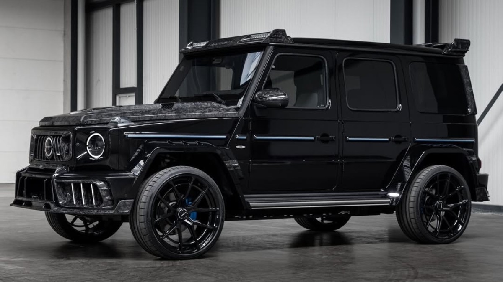

<head>
    <title>Mercedes-Benz G-Class<title>
</head>
<body>
    <h1>Mercedes-Benz G-Class</h1>
    
    <p>he Mercedes-Benz G-Class, colloquially known as the G-Wagon or G-Wagen[3] (as an abbreviation of Geländewagen), is a four-wheel drive luxury SUV sold by Mercedes-Benz.
        Originally developed as a military off-roader, later more luxurious models were added to the line. In certain markets, it was sold under the Puch name as Puch G until 2000.
        The G-Wagen is characterised by its boxy styling and body-on-frame construction. It uses three fully locking differentials,
        one of the few passenger car vehicles to have such a feature. Despite the introduction of an intended replacement,
        the unibody SUV Mercedes-Benz GL-Class in 2006, the G-Class is still in production and is one of the longest-produced vehicles in Daimler's history,
        with a span of 45 46 years. Only the Unimog surpasses it.[4] In 2018, Mercedes-Benz introduced the second-generation W463 with heavily revised chassis,
        powertrain, body, and interior. In 2023, Mercedes-Benz announced plans to launch a smaller version of the G-Class, named "little G"—though no definitive date was given for the launch.
        [5]</p>
    <   button>purchase options</button>
        <nav>
        <a href="index.html">back to home page</a>
        </nav>
</body>